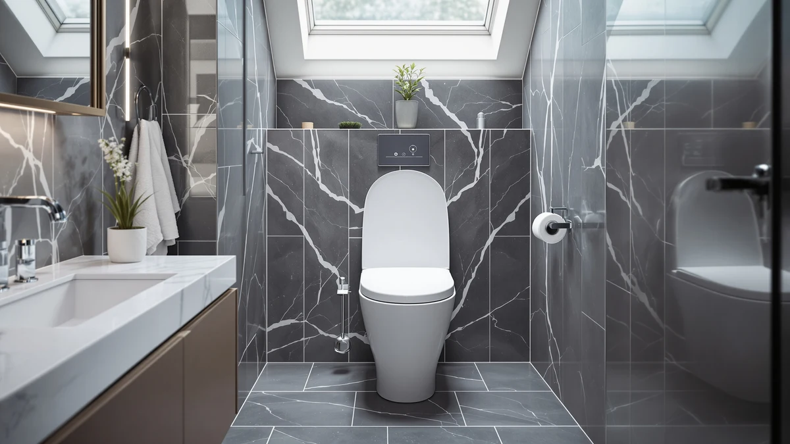

Smart Toilet with Bidet Review (2026): Worth It?
Prices and picks verified as of August 2026. Independent, reader-supported reviews.


Quick Answer
This smart toilet with bidet review centers on Loniko's $549.99 model, the priciest of four bidet-equipped one-piece toilets we compared for this guide. If you want the same integrated bidet approach for less, Loniko's own $399.99 version, the WITMYA at $379.99, and the Glendan at $369.99 all cost meaningfully less.
Our pick: Smart Toilet with Bidet Built, $549.99 Check Price on Amazon
Bottom line: our top pick is the Smart Toilet with Bidet Built In at $549.99.
Things to Know Before You Buy
- Loniko prices this Smart Toilet with Bidet Built at $549.99, the most expensive of the four models in this smart toilet with bidet review.
- Loniko sells a second, nearly identically named Smart Toilet with Bidet model at $399.99, $150 less than the version we focus on here.
- WITMYA's Smart Toilet with Bidet comes in at $379.99, close to Loniko's cheaper option but from a different manufacturer entirely.
- Glendan's Smart Toilet with Bidet Built-in undercuts all three at $369.99, the lowest price among the four toilets compared in this review.
This smart toilet with bidet review breaks down whether Loniko's $549.99 model earns its price against three cheaper alternatives covered on this site, including a second Loniko unit at $399.99. Loniko builds the toilet around an integrated bidet, folding the wash function into the base unit rather than requiring a separate seat or attachment bought and installed afterward. We pulled Loniko's own product listing, several images shot from different angles, and set it beside the WITMYA Smart Toilet with Bidet and the Glendan Smart Toilet with Bidet Built-in, two models that cover similar ground for less money.
The short version: Loniko doesn't publish enough detail in either of its own listings to say what specifically justifies the $150 gap between its $549.99 and $399.99 models, so the decision mostly comes down to how much of a premium you're willing to pay without a documented reason for it. Pick the $549.99 version if you want the top-tier Loniko listing regardless. Pick one of the three alternatives below, starting with Loniko's own cheaper model, if you'd rather save money on the same general category of toilet.
Why You Should Trust Us
Ilane Tall has researched bathroom fixtures, including one-piece and smart toilets, for more than ten years at Best One Piece Toilets. She built this smart toilet with bidet review by comparing each brand's own published listing on price, brand, and stated features, the same side-by-side process this site uses for every review. We don't take payment from Loniko, WITMYA, or Glendan to influence placement, and our Amazon links only earn a commission if you buy through them, which doesn't change what we recommend.
Our Research Experience
For this smart toilet with bidet review, we started with Loniko's own listing for the $549.99 model: the product photos, the integrated bidet design, and the stated price. We then set it against Loniko's own $399.99 version along with the WITMYA Smart Toilet with Bidet at $379.99 and the Glendan Smart Toilet with Bidet Built-in at $369.99, three models that span a narrower price range below the $549.99 unit. None of the four listings we reviewed carries a public rating or review count, so we leaned on the facts we could verify directly: published price, brand, and product category, rather than guessing at long-term reliability we can't confirm. That gap in the public record is worth keeping in mind as you read the rest of this smart toilet with bidet review, since the comparison here rests on documented pricing and design claims rather than a verified track record from other owners. We treated the listing photos and brand descriptions as a starting point, not a substitute for the kind of long-term feedback that only accumulates once enough buyers have installed and lived with a unit.
Overview & Specs

Smart Toilet with Bidet Built
What we like
- Combines a one-piece toilet and bidet into a single unit, so you skip buying and installing a separate bidet seat or attachment
- Loniko documents the toilet with multiple product images from different angles, giving you a fuller visual sense of the design before you buy
- Comes from a brand that specializes in bidet-equipped toilets rather than general toilet manufacturing
Flaws but not dealbreakers
- Priced $150 higher than Loniko's own $399.99 Smart Toilet with Bidet, without a clearly documented reason for the gap
- No public rating or review count on the listing we reviewed, so you're relying on Loniko's own description rather than verified buyer feedback
- At $549.99, it costs $180 more than the Glendan, the least expensive bidet-equipped model in this smart toilet with bidet review
| Material | — |
| Size | — |
Loniko builds this toilet around a combined one-piece and bidet design, folding the wash function directly into the base unit instead of requiring a separate bidet seat purchased and installed on its own. That single-unit approach is the main reason to consider this model over toilet-only alternatives, since the bidet function comes built in from the start rather than bolted on afterward. Loniko's listing includes several images of the toilet from different angles, which gives you a fuller sense of the design than a single product photo would, and that level of documentation matters when you're spending close to $550 on a bathroom fixture sight unseen.
At $549.99, this Loniko model sits at the top of the price range in this smart toilet with bidet review, above its own $399.99 sibling and well above the WITMYA and Glendan alternatives covered below. Loniko doesn't spell out in its listing what separates the two price tiers of its own toilet, so we can't point to a specific feature that explains the $150 gap. If an integrated bidet is the priority and you're comfortable paying for the pricier listing without a documented reason for the premium, this model fits. If you'd rather see a clearer price-to-feature match, the alternatives below are worth comparing first.
What We Liked
The clearest advantage in this smart toilet with bidet review is the combined design. Instead of buying a one-piece toilet and shopping separately for a bidet seat, Loniko folds both into a single $549.99 unit, which simplifies installation and gives you one listing to research instead of two. Loniko also documents the toilet with several images from different angles, more visual coverage than a bare product photo offers, and that helps you judge the design before committing to spend this much. For buyers who have already decided they want an integrated bidet and don't want to piece together a toilet and a separate wash attachment on their own, that all-in-one approach is worth the premium Loniko charges for it.
What Could Be Better
The biggest drawback in this smart toilet with bidet review is price relative to the field. At $549.99, this Loniko model costs $150 more than Loniko's own $399.99 version and $180 more than the Glendan, the least expensive bidet-equipped toilet we compared. Loniko hasn't accumulated a public rating or review count on the listing we reviewed, so we can't confirm long-term durability or real-world bidet performance beyond what the brand's own product description states. That missing track record is a real gap when you're spending this much on a bathroom fixture, and it's worth weighing alongside the price itself. If your bathroom doesn't strictly need the pricier listing over Loniko's own cheaper option, that $150 gap is hard to justify without more documentation to back it up.
Who Is It For?
This Loniko smart toilet with bidet fits buyers who have already decided they want bidet functionality built into the toilet itself and don't want to shop separately for a seat or attachment afterward. Anyone remodeling a bathroom from scratch and willing to pay a premium for that single-unit convenience will find it a reasonable match too. Shopping mainly on price? Loniko's own $399.99 version covers the same general design for $150 less, without a documented reason for the higher listing to justify the gap. And if brand loyalty to Loniko isn't a factor, the WITMYA and Glendan alternatives below cover the same bidet-equipped category for even less money. Buyers who need a documented rating history before committing this much to a bathroom fixture should treat every option in this comparison with the same caution, since none of the four has one yet.
Alternatives to Consider
If the $549.99 price gives you pause, these three toilets cover similar or adjacent ground for meaningfully less money, and each is worth a look in this smart toilet with bidet review.

Editor's Pick
Smart Toilet with Bidet Built
Loniko's own $399.99 Smart Toilet with Bidet matches the pricier model's core idea, a bidet built into a one-piece toilet, for $150 less. Since Loniko doesn't document a clear feature difference between the two listings, this is the version to start with if you want the same brand and the same basic design without paying the higher price.
$399.99
Check Price on Amazon
Best Value
WITMYA Smart Toilet with Bidet
WITMYA prices its Smart Toilet with Bidet at $379.99, close to Loniko's cheaper option but from a different manufacturer entirely. It won't match Loniko's multi-angle listing photos point for point, but it's worth comparing if you want bidet functionality without committing to Loniko specifically.
$379.99
Check Price on Amazon
Premium Choice
Smart Toilet with Bidet Built-in:
Glendan prices its Smart Toilet with Bidet Built-in at $369.99, the lowest price among the four toilets compared in this smart toilet with bidet review. It skips the higher listing price without publicly detailing what, if anything, it trades off to get there, so treat it as the budget-minded option in this comparison.
$369.99
Check Price on AmazonFrequently Asked Questions
Is the $549.99 Loniko Smart Toilet with Bidet worth it?
It's worth $549.99 if you specifically want a bidet function built into the toilet itself and are comfortable paying $150 more than Loniko's own $399.99 version without a clearly documented reason for the gap. If price matters more, that cheaper Loniko listing covers the same basic design for less.
How does this Loniko compare to Loniko's own cheaper model?
Both listings describe a one-piece toilet with an integrated bidet from the same brand, but the model in this smart toilet with bidet review costs $150 more at $549.99 versus $399.99. Loniko doesn't spell out a feature difference between the two in either listing, so the decision comes down to price rather than a documented upgrade.
Do you need a smart toilet with bidet, or will a standard one-piece toilet work?
If you want the wash function built into the toilet from the start, a smart toilet with bidet like the Loniko, WITMYA, or Glendan models in this review makes sense. If you don't need that feature, a standard one-piece toilet covered elsewhere on this site will cost less and skip the bidet premium entirely.
Final Verdict
This smart toilet with bidet review comes down to a straightforward trade-off. Loniko's $549.99 model delivers a one-piece toilet and integrated bidet system in a single unit, the highest price among the four models we compared, and without the public review history that would let us confirm long-term performance firsthand. If you want that bidet function built into the toilet itself and price isn't the deciding factor, Loniko's $549.99 version is a reasonable buy. If you'd rather save $150 without a documented reason to pay more, Loniko's own $399.99 model, along with the WITMYA and Glendan alternatives above, is worth a look first.